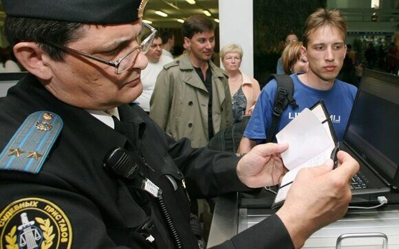

Как не попасть в «черный список» невыездных должников 26.08.2019 14:02
Как не попасть в «черный список» невыездных должников 26.08.2019 14:02Число невыездных россиян, которые из-за своих долгов не могут уехать за рубеж, составляет примерно 3,5 млн человек, или около 3% взрослого населения страны. Большинство из них просрочили выплаты по кредитам и алиментам, то есть претензии к ним обоснованы. Однако есть и такие, кто попадает в «черный список» по случайным причинам — например, из-за технических сбоев в работе пограничников и приставов. Оперативно выплатить долг, даже небольшой, в аэропорту, несмотря на существование самых современных платежных терминалов, не всегда удается — бюрократические процедуры по снятию запрета могут занять до одного месяца. Поэтому к заграничной поездке с точки зрения погашения набежавших долгов стоит заблаговременно подготовиться, чтобы потом в панике не бегать мимо таможенного контроля, оплакивая свой погубленный отпуск.
Ради снятия запрета на выезд за границу в первой половине этого года более 1,5 млн российских граждан выплатили 45 млрд рублей просроченных долгов. Число тех, кто вынужден-таки смириться с необходимостью выполнить свои долговые обязательства, чтобы спокойно покинуть страну и отправиться в отпуск или командировку, постоянно растет. Примерно за то же время в 2018 году аналогичные выплаты составили около 20 млрд рублей.

Вместе с тем количество тех, кого государство по причинам задолженности не пускает за рубеж, также увеличивается. Как сообщает Федеральная служба судебных приставов (ФССП), за пять месяцев этого года таких нерадивых граждан стало больше на 31%. Для того чтобы не попасть в неловкую ситуацию, когда о запрете на выезд из России узнаешь только на вокзале или в аэропорту, когда билеты уже куплены, а путевки на заморские курорты оплачены, необходимо твердо запомнить определенные правила — лучше проверить состояние своего финансового положения заранее, чтобы потом не понести дополнительные расходы и спокойно поехать на отдых.
Не заплатишь — не поедешь
Самое главное, что надо понимать: поставить барьер на выезд за рубеж, если у человека существуют долговые обязательства, пограничники имеют право только в случае решения суда, в котором определена сумма задолженности, а также существования исполнительного листа на ее принудительное взыскание судебными приставами. При этом совсем не важно, какой характер носят денежные требования — это может быть просроченный кредит, неоплаченная «коммуналка», непогашенные штрафы (в первую очередь за нарушение правил дорожного движения) или алименты. В первых трех случаях барьер установлен на рубеже 30 тыс. рублей: если долг выше — то не выпустят. Для алиментщиков выездной рубеж — 10 тыс. рублей. Если по всем перечисленным обстоятельствам в суд никто не обращался и ничего не пытался взыскать, то можно спокойно собирать чемоданы и готовиться к отпуску или зарубежной деловой поездке.
Когда решение суда есть, то расслабляться не стоит. Поставить шлагбаум на границе могут, даже если человек не осведомлен о своем «невыездном» статусе. Уклонистом будет считаться тот, кто не внес деньги «в кассу» в течение пяти дней после получения постановления о возбуждении исполнительного производства — это стандартный срок добровольной оплаты долга.
Постановление о временном ограничении на выезд из России может вынести судебный пристав по инициативе взыскателя на основании решения соответствующей юридической инстанции, причем даже в отсутствие самого должника. Единственное, что обязан сделать пристав, это направить должнику копию постановления не позднее двух дней после его подписания. В теории, неплательщик тем самым официально уведомляется о существовании документа, который закрывает ему выезд за пределы страны. Впрочем, на практике о наличии постановления с удивлением приходится узнавать уже в аэропорту.
К сожалению, если факт долговых обязательств обнаружится только в точке выезда, то оперативно — то есть прямо на месте — выплатить долги и устранить запрет вряд ли получится. Даже если у должника имеются с собой на эти цели необходимые средства. Причем сделать это затруднительно как на наземном пограничном переходе, так и в аэропорту. Возникает вопрос — почему? Ведь большинство международных транспортных узлов оборудованы всеми платежными терминалами и точками доступа к Интернету. Казалось бы, при обнаружении запрета на вылет должник может погасить задолженность непосредственно перед вылетом. Но на деле все гораздо сложнее: механизм снятия запрета на выезд за границу не срабатывает мгновенно — эта процедура чересчур сложна и донельзя бюрократизирована. Наличие на вокзалах специальных терминалов для выплаты долгов зачастую является лишь демонстрацией доступных услуг, но не всегда оказывается способом оперативной помощи клиентам, которые оказались в критической ситуации. Дело в том, что оплата долга не сразу отображается в общем реестре платежей. Ограничения по выезду должника из России накладывает ФССП, которая также выносит решение о его снятии. Правда, сначала информацию о погашении финансовых обязательств должен проверить конкретный человек — инспектор ведомства. Он оценивает документы об оплате, оформляет свидетельство, отменяющее запрет: сначала на бумаге, а потом — в виде компьютерного файла.
Только после информация поступает в пограничную службу, которая дает «зеленый свет» выезжающим на рубеж. Если проштрафившийся путешественник управится со всеми процедурами за 2–3 дня, можно сказать, ему повезло. Ускорить снятие запрета можно, обратившись с соответствующей просьбой в службу судебных приставов, занимающуюся непосредственно долгами запрашивающего. Если дата выезда за границу не критична и путешественник готов потерпеть несколько суток, то можно остановиться в отеле или вернуться домой и подождать. Конечно, это будет стоить лишнего времени и денег, а также вынудит понервничать, но, преодолев все преграды, можно будет решить одновременно две проблемы: убедиться, что у тебя больше нет долгов, и все-таки выехать в намеченную точку мира. Вместе с тем чаще встречаются примеры, когда срок оформления всех документов растягивается на одну-две недели и россиян не пускают за границу, даже несмотря на их уверенность в своем «чистом» от материальных обязательств статусе.
В «черный список» — по ошибке
Как рассказывает Ильдар из Нижнекамска, неприятность в аэропорту случилась с ним несколько лет назад, когда он собирался с семьей вылететь на отдых в Анталию. «Незадолго до отъезда я ознакомился с данными из базы исполнительных производств службы судебных приставов — буквально за два месяца до отпуска я выплатил последние проценты по крупному кредиту. О возбужденных в моем отношении делах сведений в базе не было. Как подтвердила мне судебный пристав-исполнитель: все ограничения сняты, — вспоминает Ильдар. — Но в аэропорту меня завернули, утверждая, что задолженность осталась. Пришлось вернуться домой. Связался с приставами — говорят, что произошла ошибка. Через месяц снова собрался на отдых, но та же ситуация — долг, который я погасил, значился в документах пограничников. Уехал в отпуск ближе к зиме, когда все претензии наконец-то были официально сняты».
Другой историей делится в соцсетях петербуржец Алексей. Его также не пустили за границу, обвинив в неоплаченном кредите. Он обратился в суд и выиграл его. «Оправдания ответчиков, приставов и пограничников выглядели нелепыми. Мне объяснили, что при отправке сообщения о снятии запрета на выезд в Федеральную службу безопасности произошел компьютерный сбой, и его не удалось занести в базу. ФСБ выслала приставам соответствующее уведомление, но информация затерялась, и ограничения остались в силе», — рассказывает Алексей.
В совсем уж курьезную ситуацию попала Светлана из Тюмени. Она выложила почти 300 тыс. рублей за отдых на Мальте, но на таможне выяснилось, что в ее отношении возбуждено исполнительное производство по принудительному взысканию долга более чем на 25 млн рублей. «Я такую сумму не то что в руках не держала, но и в глаза не видела, — делится пережитыми чувствами Светлана. — В ходе разбирательств выяснилось, что этот миллионный долг висит на моей полной тезке. Выписывая исполнительный лист, судья допустила ошибку и перепутала наши даты рождения, и чужой кредит стал моей головной болью. Претензии ко мне в конце концов сняли, но на Мальту я так и не съездила».
Возникает впечатление, что гарантированного способа обезопасить себя от подобных «ошибок» не существует. Так что же надо сделать, чтобы минимизировать все риски? В последнее время каждому из нас приходится заботиться об огромном количестве платежей — налогах, кредитах, «коммуналке», штрафах ГИБДД, а кому-то — и об алиментах. Немудрено о чем-то элементарно забыть. Поэтому стоит заблаговременно узнать, можно ли пересечь границу.
Проверить задолженности можно на портале государственных услуг или в онлайн-режиме в Банке данных исполнительных производств, а данные о наложенном ограничении доступны на сайте службы судебных приставов. Есть также и коммерческие сервисы, которые за 250–300 рублей обещают предоставить клиенту полную информацию и оценить вероятность запрета на выезд.
Наконец, можно напрямую обратиться в службу судебных приставов по месту жительства. Правда, сделать это необходимо заблаговременно — рассмотрение запроса может занять до месяца. Впрочем, очевидно, что главными рецептами для гарантированного выезда за рубеж служат более внимательное отношение ко всем личным финансовым обязательствам и их своевременная оплата.
Мертвецам долги прощают
Хотя процесс получения информации о размере и структуре долгов населения становится все более открытым, остается довольно много нюансов, незнание которых может затруднить россиянам запланированный зарубежный вояж. Так, если вы выезжаете за границу на приобретенном в кредит автомобиле и при этом долг за транспортное средство еще не погашен, то стоит сначала уведомить об этом банк, где происходило заимствование. Только выполнение подобных условий позволит избежать ненужных проблем при пересечении пограничных пунктов.
Невыплаченные долги не могут послужить препятствием для выезда из страны в случае следующих уважительных причин — срочного лечения собственного здоровья, болезни или смерти близкого родственника, а также вступления в наследство в иностранных юридических инстанциях. Правда, разрешение на такие поездки все-таки стоит оформлять заблаговременно. Для соблюдения процедуры придется уведомить старшего судебного пристава-исполнителя, обладающего сведениями о ваших долговых обязательствах и контролирующего процесс их взыскания. Правда, постановление о снятии ограничения на пересечение границы он будет выносить по собственному усмотрению, на основе скрупулезного анализа всех обстоятельств и только при наличии соответствующих документальных подтверждений. В связи с этим надеяться на более лояльное отношение в этой ситуации со стороны заинтересованных органов власти лучше не стоит.
Впрочем, юристы утверждают, что есть вполне легальные лазейки, которыми могут воспользоваться для выезда за рубеж злостные неплательщики. Например, вполне законно это можно сделать в небольшой промежуток времени между завершением срока предыдущего запрета на пересечение ими границы до вынесения нового аналогичного ограничительного решения. Дело в том, что длительность запрета на зарубежные поездки в случае существования каких-либо долгов, который назначают представители Фемиды, не может превышать шесть месяцев с момента вынесения соответствующего судебного приговора. Если человек продолжает манкировать своими финансовыми обязательствами, то в его отношении выносится повторное решение. Однако сам процесс оформления повторного исполнительного листа будет занимать от 7 до 14 дней. В эту паузу, как поясняют юристы, должник сможет беспрепятственно дислоцироваться за пределы родного государства.
Самыми хитрыми способами выезда в любую желаемую страну при наличии долгов являются так называемые транзитные пересадки в дружественных России государствах. В частности, на поезде через Казахстан, по территории которого проходят несколько транзитных маршрутов, связывающих российские населенные пункты. Например, Челябинск и Омск — дорога от одного до другого проходит с остановкой в казахском Петропавловске. Для этого должнику нужно купить в Челябинске два билета: один до Омска, другой до Петропавловска. Границу с Казахстаном он пересечет по транзитному билету, но до конечного пункта не доезжает и сходит с поезда в Петропавловске в соответствии с билетом, купленным до этой точки. После получения миграционной карты он может отправляться на все четыре стороны. Аналогичный трюк можно провернуть через Белоруссию и Литву: взять билет до Калининграда, а сойти в Минске или Вильнюсе.
Еще раз подчеркнем: указанные методы не противоречат российскому законодательству. Хотя очевидно, что они демонстрируют наличие в нем определенных пробелов. Пограничники сопредельных государств не располагают информацией о задолженности российского туриста — они могут только «пробить» его по базам международного розыска. Тем не менее нельзя забывать, что нарушение должником решения суда об ограничении заграничных поездок преследуется административной и даже уголовной ответственностью. Поэтому, пользуясь подобными лазейками, нужно отдавать себе отчет, какие последствия могут ждать нарушителя в результате.
Тем же, кого не выпустили из России по ошибке, стоит обращаться в суд для возмещения компенсации, хотя победа в таких юридических спорах, как показывает практика, далеко не всегда оказывается на стороне истца.
Кому еще нельзя покидать Россию
- подозреваемым, обвиняемым и осужденным за преступления;
- проходящим службу в армии, включая альтернативную обязательную службу;
- предоставившим заведомо ложные сведения в выездных документах;
- заключившим трудовой договор с условием запрета на выезд за рубеж;
- обладающих доступом к гостайне.
Источник: Опубликован в газете "Московский комсомолец" №28058 от 26 августа 2019